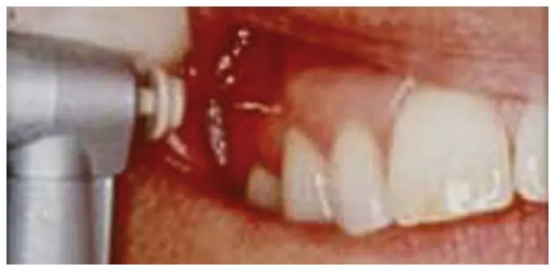

نسخه استخراجشده؛ ترجمه یا تأیید علمی انجام نشده است. وضعیت: captured
مولر اول پایین با پالپیت برگشتناپذیر علامتدار (SIP)، ۱۵ دقیقه پس از بلاک عصب آلوئولار تحتانی (IANB)، هنوز به تست سرما پاسخ میدهد؛ لب بیمار کاملاً بیحس است. چه چیزی اضافه میکنی؟
کارپول دارای تنگکننده اسیدی است: pH حدود ۳٫۵، و محلول ساده حدود ۶٫۵. افزودن سدیم بیکربنات درست پیش از تزریق، pH را به حدود ۷٫۴ میرساند و سهم شکل بیبار لیدوکائین را از حدود ۰٫۰۰۴٪ به حدود ۲۴٪ میبرد.
در پالپیت برگشتناپذیر فک پایین، کارآزماییها هنوز افزایش معنادار موفقیت را نشان ندادهاند؛ شواهد هنوز قطعی نیست. شروع سریعتر و تزریق راحتتر همچنان سود آن است.
آرتیکائین ۴٪ بهدلیل حلقهی تیوفن چربیدوستتر است و از بافت نرم و استخوان بهتر از لیدوکائین نفوذ میکند. پس از بلاک، ۰٫۶ تا ۰٫۹ میلیلیتر، ترجیحاً بافرشده، در وستیبول باکال همسطح اپکس دندان تزریق کن. در اینفیلتراسیون فک بالا، احتمال موفقیت پالپی آرتیکائین حدود ۳٫۸ برابر لیدوکائین است.
نیتروس اکساید و اکسیژن (۳۰ تا ۵۰٪ نیتروس) هم اضطراب را کم میکند و هم آستانهی واکنش به درد را بالا میبرد. در بیماران SIP، موفقیت IANB با آن ۵۰٪ بود و با دارونما ۲۸٪.

افزودن تزریق اینترااوسئوس پس از IANB، موفقیت بیحسی پالپ مولر پایین را از حدود ۵۵٪ به حدود ۹۰٪ رسانده است و اثرش بیدرنگ شروع میشود. اینتراسپتال و PDL را میتوان بهجای آن به کار برد، ولی PDL فقط وقتی کارآمد است که عفونت یا التهاب شدید در محل نباشد.
در حدود ۵ تا ۱۰٪ دندانهای خلفی پایین با SIP، حتی تزریقهای مکمل تکرارشده هم جواب نمیدهند. اینجا نوبت تزریق اینتراپالپال است که هم با اثر دارو و هم با فشار بیحس میکند. خود تزریق لحظهای دردناک است، ولی تسکین تقریباً بیدرنگ میآید. با رواج اینترااوسئوس، نیاز به اینتراپالپال کمتر شده است.
اشتباه رایج: آرامبخشی را جایگزین بیحسی دانستن. آرامبخشی فقط کمک است؛ بیحسی عمیق موضعی همچنان راه اصلی حذف درد در درمان پالپ است.